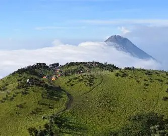
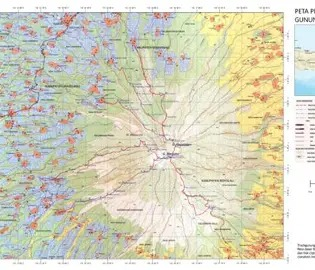
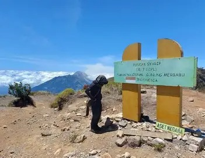

Sejarah

Nama Merbabu berasal dari gabungan kata "Meru" yang berarti gunung dan
"Abu" yang berarti abu. Jadi Merbabu berarti Gunung Abu. Gunung ini pernah
meletus pada tahun 1560 dan 1797. Menurut legenda, Gunung Merbabu
merupakan tempat pertapaan para dewa pada zaman dahulu.
Geografis

Gunung Merbabu dikelilingi oleh beberapa gunung besar lainnya, sehingga
posisinya sangat strategis di tengah Pulau Jawa. Secara geografis gunung ini
terletak di tiga kabupaten yaitu Magelang, Boyolali, dan Semarang, Provinsi
Jawa Tengah, dengan ketinggian 3.145 m di atas permukaan laut. Puncak
tertingginya adalah Puncak Kenteng Songo dengan ketinggian 3.145 meter dan
Puncak Syarif dengan ketinggian 3.119 meter di atas permukaan laut.
Gunung Merbabu memiliki 5 jalur pendakian resmi, yaitu jalur Selo, Suwanting,
Wekas, Tekelan, dan Chuntel. Dengan kondisi sabana yang sangat luas dan
hutan pinus di setiap posnya, Merbabu menjadi gunung yang sangat indah
untuk pendakian terutama pada musim kemarau.
Wisata
Sejak viralnya pemandangan sabana Merbabu di media sosial, gunung ini telah
menjadi tujuan utama para pendaki dari berbagai daerah terutama dari Yogyakarta
dan Semarang. Selain menjadi tujuan pendakian, Gunung Merbabu juga dikenal
dengan pemandangan matahari terbitnya yang sangat indah serta padang edelweis
dan sabana yang luas di Pos 3.
Sabana Selo
Berada di jalur pendakian paling populer, Sabana Selo menjadi spot favorit
yang tidak pernah sepi pendaki. Selain karena jalurnya yang landai, kawasan
ini juga menghadirkan hamparan sabana hijau yang sangat luas. Semua itu
sangat cocok untuk spot foto yang Instagramable dengan latar Gunung Merapi.
Puncak Kenteng Songo

Memiliki pemandangan 360 derajat, dari puncak ini kamu bisa melihat 7 gunung
sekaligus, antara lain Gunung Merapi, Sumbing, Sindoro, Telomoyo, Andong,
Lawu, dan Ungaran. Puncak ini ditandai dengan tugu triangulasi dan batu-batu
besar yang tertata. Puncak ini boleh dikunjungi oleh siapapun, tanpa batasan.
Namun, bagi yang ingin mencapai puncak ini wajib menjaga stamina. Untuk
pendakian disarankan berangkat malam hari. Sementara itu, pemandangan
terbaik terlihat setiap pagi hari saat matahari terbit.